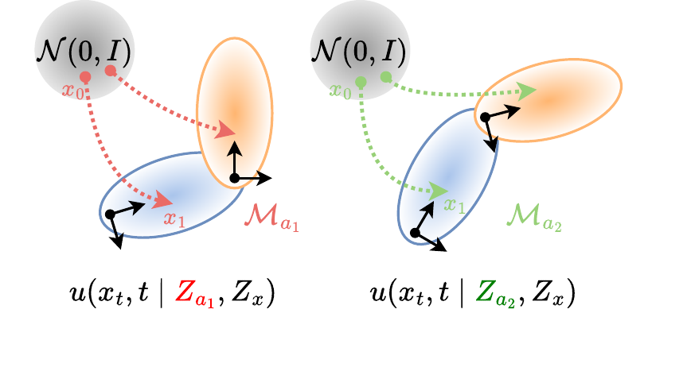
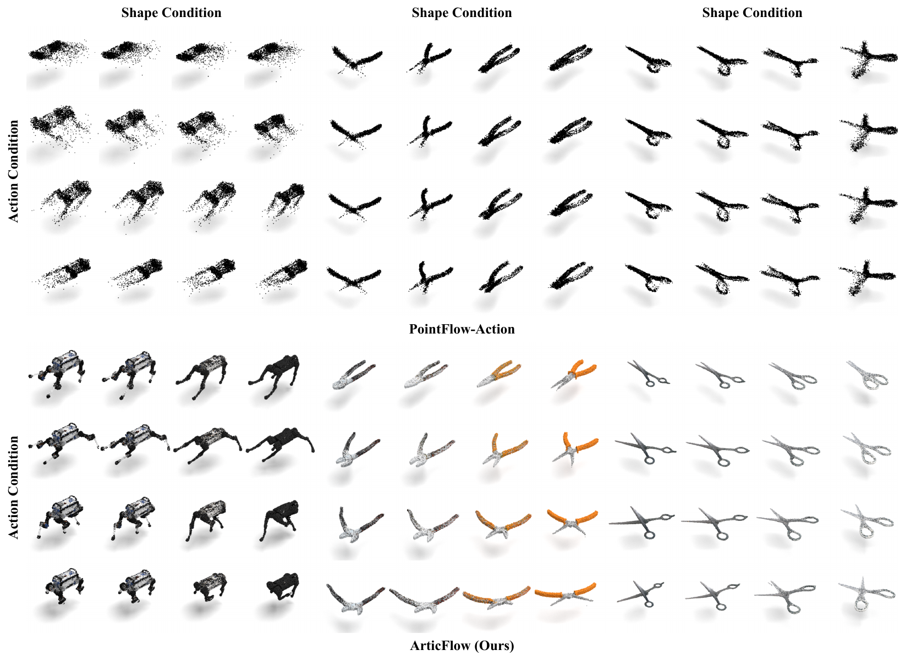

Generating articulated 3D objects, from everyday tools like pliers and eyeglasses to robotic arms and quadrupeds, requires modeling both geometric diversity and kinematic constraints — a challenge that existing point-cloud generators ignore and prior articulated methods address by assuming predefined kinematic skeletons. We propose ArticFlow, a flow-matching framework that learns a controllable velocity field from noise to target point sets under explicit action control. ArticFlow couples (i) a latent flow that transports noise to a shape-prior code and (ii) a point flow that transports points conditioned on the action and the shape prior. On PartNet-Mobility and MuJoCo Menagerie, a single model per category synthesizes novel shapes via latent interpolation and produces kinematically consistent deformations under unseen actions. Generated point clouds further chain into a point-cloud-to-URDF pipeline, closing the loop from skeleton-free generation to simulation and policy training.
Each sequence is a raw ArticFlow output: one action dimension swept while the shape latent is held fixed. Drag to orbit, scroll to zoom.
A latent flow samples the shape-prior code; the point flow transports noise to the posed shape, conditioned on the action and the shape prior.

Holding the shape prior fixed produces kinematically consistent deformations of the same instance; holding the action fixed varies appearance under the same pose. Interpolating the shape latent yields novel instances.

Generated sweeps further chain into a point-cloud-to-URDF pipeline; the reconstructed robot below is actuated in simulation (see the repo docs).
@inproceedings{lin2026articflow,
title = {ArticFlow: Action-Conditioned Flow Matching for Skeleton-Free Articulated Generation},
author = {Lin, Jiong and Ruan, Jinchen and Lipson, Hod},
booktitle = {Conference on Robot Learning (CoRL)},
year = {2026}
}